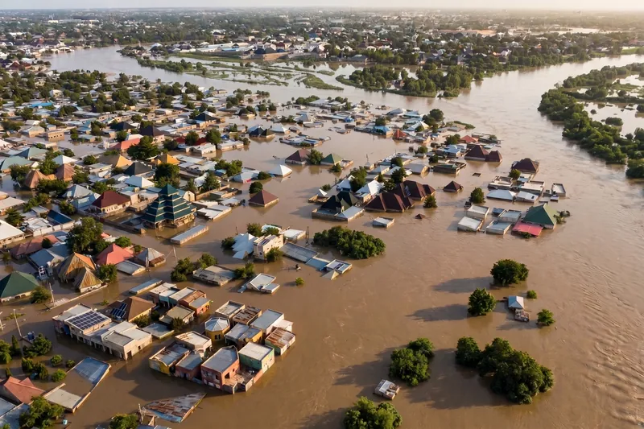
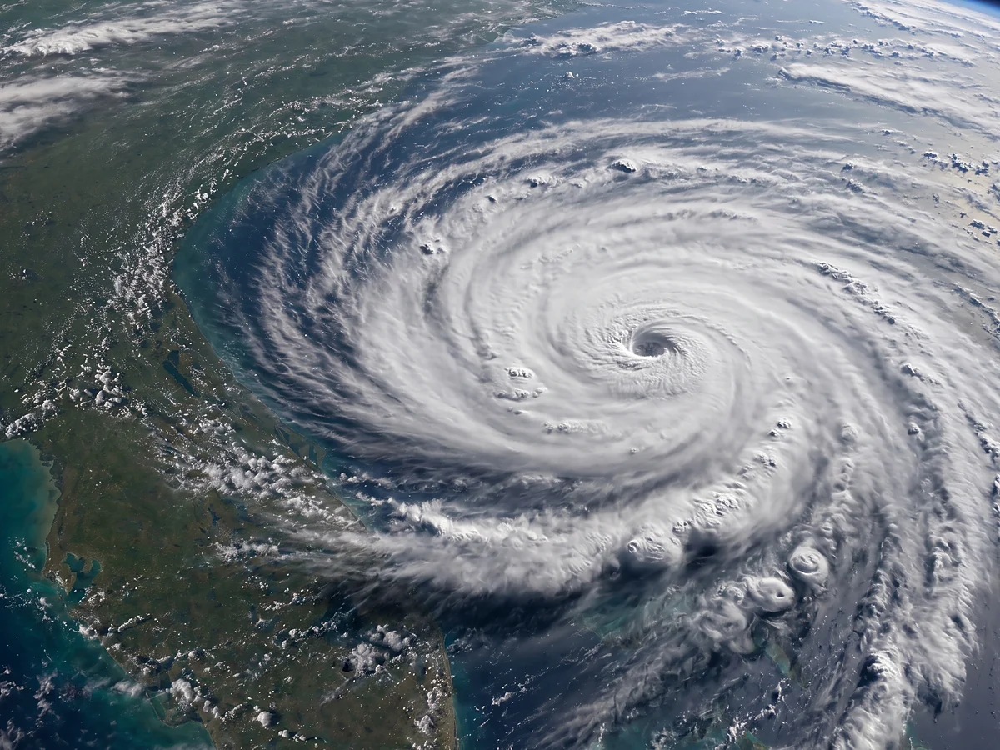
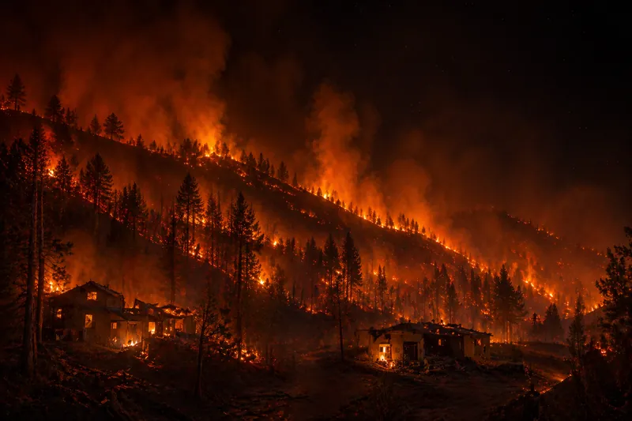
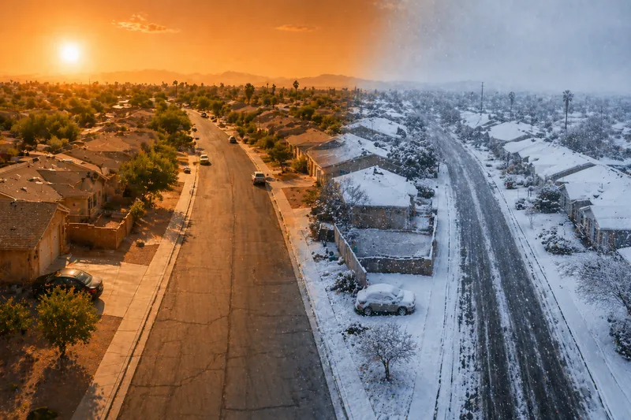
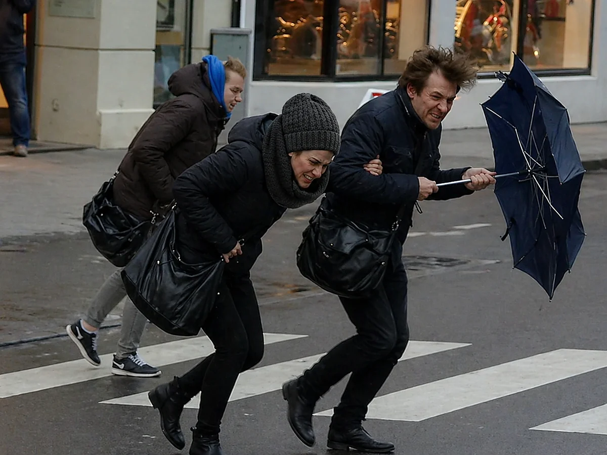
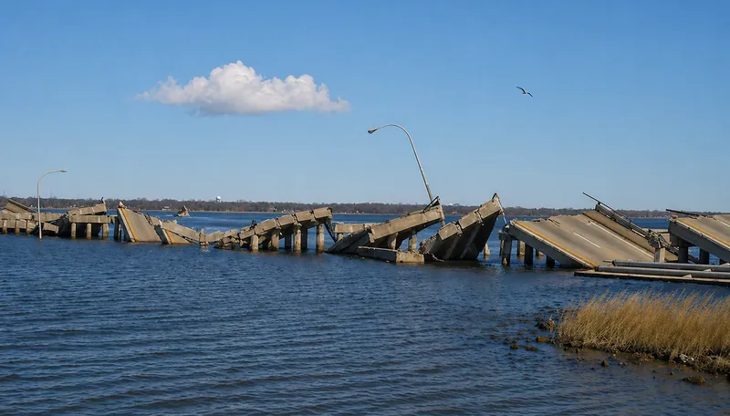
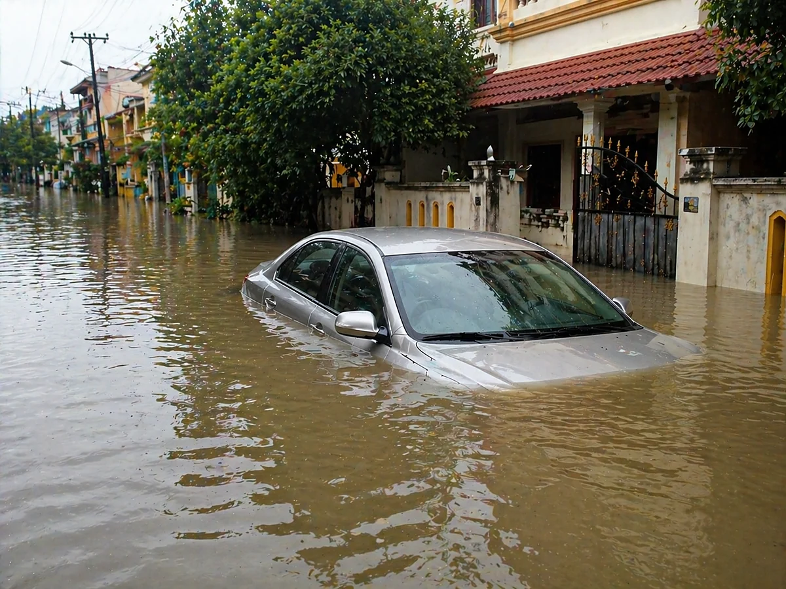
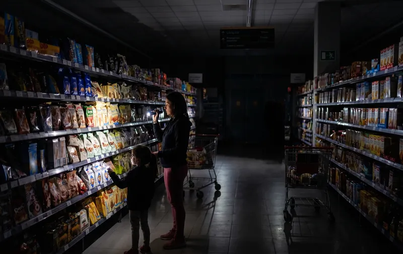

Physics-based modeling
High-resolution hydrodynamic, CFD and particle-based models that resolve how water, wind and heat interact with terrain, buildings and structures.
We pair high-fidelity physics-based modeling with physics-informed AI to show where floods, storms, wildfire and extreme heat will hit hardest, and which measures will protect people and infrastructure.
Extreme weather is becoming more frequent and more costly. Yet the decisions that matter most (where to invest, what to retrofit, which routes to keep open) still rely on coarse hazard maps and slow, one-off studies.
RUCEEE LAB closes that gap. We build high-resolution models of how environmental extremes interact with cities, infrastructure and energy systems, then use physics-informed AI to run them fast enough to inform real planning and design decisions.
Communities, infrastructure and energy systems that stay safe and functional as environmental extremes intensify.
To turn physics-based modeling and physics-informed generative AI into clear, defensible assessments of community vulnerability, and into the mitigation strategies that protect people, infrastructure and the environment.
We bring together the fidelity of physics and the speed of AI to understand how environmental extremes affect communities, and to turn that understanding into actions that keep people, infrastructure and energy systems safe.
High-resolution hydrodynamic, CFD and particle-based models that resolve how water, wind and heat interact with terrain, buildings and structures.
Machine-learning models trained on physics that deliver high-resolution results in a fraction of the compute time, across far more scenarios.
Turning model output into prioritized action: which assets are most exposed, which measures reduce risk most, and where investment pays off.
We follow each hazard through the full chain, from who and what is exposed to the measures that keep them safe.

Flooding
Wind & hurricanes
Wildfire
Extreme heat & coldPhysics and AI working together at every step

People’s safety
Infrastructure resilience
Property & assets
Energy securityOur team’s research and engineering experience spans leading universities, national laboratories and industry.
Tell us about the site, the hazard and the decision you need to make, and we will tell you how we can help.